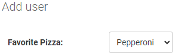
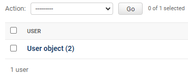
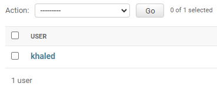

--Introduction--
In the models file you will be able to design your database tables.
Instead of typying row database code. Django facilitate that by using models.
Models file will take your code then it will interpret it to database language.
We will explain this process in Migration section.
To build your model you will need to implement the following steps always.
First step:
Give your table name and invoke the Model package to enable django read it and interpret it into database Table.
Class Table name (models.Model)
Second step:
Insert your field name, define its type and restrict it (validation).
field name = models.type(validation)
Example:

class Person(models.Model):
    first_name = models.CharField(max_length=30)
    last_name = models.CharField(max_length=30)

Explanation: first_name and last_name will be string for that we used CharField type. we want it to be at most 30 letters.
Users can't exceed the max length. if that happen they will get an error
Example:

class Category(models.Model):
    name = models.CharField(max_length=100)
    description = models.TextField()
Note: we will explain field types and validation in separated section.
Example:
class Product(models.Model):
    name = models.CharField(max_length=200)
    description = models.TextField()
    price = models.DecimalField(max_digits=10, decimal_places=2)
    image = models.ImageField(upload_to='products/')
    created_at = models.DateTimeField()

Why some fields have validation and required restriction?
The answer will be in field types section.
--Inheritance--
We use inheritance to reduce the replication
Example: assume we have 3 tables that used created at. 

class Car(models.Model):
    ...
    created_at = models.DateTimeField()
class Category(models.Model):
    ...
    created_at = models.DateTimeField()
class Product(models.Model):
    ...
    created_at = models.DateTimeField()

Instead of inserting created_at 3 times we can put it in separated models then we can inherit it.
Solution:
class CreatedAt(models.Model):
    created_at = models.DateTimeField()
class Car(CreatedAt):
class Category(CreatedAt):
class Product(CreatedAt):
Wow it's much better.
Car, Category and Product still have created_at = models.DateTimeField() but instead of repeating the same code 3 times.
We put it in separated Model then we inherit it.

--Abstraction--
In previous example it doesn't make sense to create object from CreatedAt so, we can unable creating object from it by using abstraction.
class CreatedAt(models.Model):
    created_at = models.DateTimeField()

    class Meta:
        abstract = True

--Migration--
After you build your tables in models file. You have to do 2 steps.
First step:
if you want to migrate all apps
python manage.py makemigrations
if you want to migrate particular app
python manage.py makemigrations app name
Second step:
python manage.py migrate
What are those steps?
makemigrations command will convert your models into database language as sql
for example:
class Person(models.Model):
    first_name = models.CharField(max_length=30)
    last_name = models.CharField(max_length=30)
Person Model will be convert it in Migration into those lines
CREATE TABLE myapp_person (
    "id" bigint NOT NULL PRIMARY KEY GENERATED BY DEFAULT AS IDENTITY,
    "first_name" varchar(30) NOT NULL,
    "last_name" varchar(30) NOT NULL
);
migrate command will execute Migration files in database
Without migrate command your tables will not be exist in database until you perform migrate command.

--Field Options--
null, blank
by default all fields are required to make it nullable use null and blank together.
name = models.CharField(max_length=30, null=True, blank=True)

choices
class User(models.Model):
    PEPPERONI = "PEP"
    CHEESE = "CHE" 
    MARGHERITA = "MAR"
    PIZZA_LIST = [
        (PEPPERONI, "Pepperoni"),
        (CHEESE, "Cheese"),
        (MARGHERITA, "Margherita"),
    ]
    favorite_pizza = models.CharField(
        max_length=3,
        choices=PIZZA_LIST,
        )
the favorite_pizza is choices so, user have to choose from those 3 types
(PEPPERONI, "Pepperoni") the display value is Pepperoni otherwise, the stored value in database is PEP

default
favorite_pizza = models.CharField(
        max_length=3,
        choices=PIZZA_LIST,
        default = PEPPERONI
        )
name = models.CharField(max_length=30, null=True, blank=True, default="khaled")
default will give the column a initial value that can be changed

help_text
email = models.EmailField(help_text="Enter valid email")
help text will help user to understand the field or what should enter

unique
email = models.EmailField(unique=True)
unique will prevent data from being repeated
if user register with example@gmail.com then other user try to register with the same email.
it will appear error like email is already exists.

verbose_name
how the field will be display for people and admin page
before:

after:


--Field Types--
Boolean
above_20 = models.BooleanField()
It will accept two value True or False

Date
event_date = models.DateField()
It will store date like year-month-day without time
example:
Stored: event_date = "2023-08-24"
Display: August 24, 2023

DateTime
appointment_datetime = models.DateTimeField()
It will store date and time like year-month-day-hours-minutes-seconds
example:
Stored: appointment_datetime = "2023-08-24 15:30:00"
Display: August 24, 2023, 3:30 PM

Time
scheduled_time = models.TimeField()
It will store time like hours-minutes-seconds without date
example:
Stored: scheduled_time = "15:30:00"
Display: 3:30 PM

Char
name = models.CharField(max_length=200)
It used for short to medium length with predefined maximum length. name will be short for that we used Char.

Text
description = models.TextField()
It used for long text without predefined maximum length. description will be long for that we used Text.

Email
email = models.EmailField()
It used when you want the field to accept just email input

URL
Used to store url link
Example:
class Website(models.Model):
    url = models.URLField()
Store data like https://www.example.com/

Decimal
total_amount = models.DecimalField(max_digits=7, decimal_places=2)
It has predefined max digits and decimal places
Example about decimal_places:
decimal_places=2 could be 00.00
decimal_places=3 could be 00.000
Example about max_digits:
max_digits=7 max value could be 1234567.00
max_digits=4 max value could be 1234.00

Float
price = models.FloatField()
It doesn't have predefined max digits and decimal places, but you can give it max_digits if you want
Example:
1452.32324
the difference between float and decimal is Float doesn't have decimal places.

Integer
points = models.IntegerField()
It store Positive and Negative Integer value that refer to integers greater than or less than or equal to zero.

PositiveInteger
age = models.PositiveIntegerField()
It store Positive Integer value that refer to integers greater than or equal to zero.

File
document = models.FileField(upload_to='documents/')
image = models.FileField(upload_to='images/')
video = models.FileField(upload_to='videos/')
You can use it to store image, video, document, excel, and pdf etc.
upload_to is required. it used to define folder name that will be used to store the file.


JSON
user_data = JSONField()
It stores dictionary of data
Example:
{"age": 30, "email": "user@example.com", "location": "City"}

Slug
product_code = models.SlugField()
It doesn't accept spaces in the field
You can't store p 123, you can store it as p-123 or p_123 so, you can use underscores or hyphens


--Manager--
encapsulate database query at the model level that allows you to
define methods that retrieve specific sets of data
The most popular manager in django that's objects => Model name . objects so, we can build more managers
Two types of managers that are Custom QuerySets and Managers
The Differences Between them are the way of calling (invoking)
Custom Manager: querying and managing objects at the model level.
Custom QuerySet: methods are accessible via the model's manager
Examples about Custom QuerySet
First Example:

class BookQuerySet(models.QuerySet):
    def published_books(self):
        return self.filter(published=True)

class Book(models.Model):
    published = models.BooleanField(default=False)
    objects = BookQuerySet.as_manager()

how to call it?
the answer is: Book.objects.published_books()

Second Example:

class ProductQuerySet(models.QuerySet):
    def price_sorted(self):
        return self.order_by('price')
    def expensive(self):
        return self.filter(price__gte=50)

class Product(models.Model):
    price = models.DecimalField(max_digits=10, decimal_places=2)
    objects = ProductQuerySet.as_manager()

how to call them?
the answer is: Product.objects.price_sorted(), Product.objects.expensive()


Examples about Custom Manager
First Example:

class PublishedBookManager(models.Manager):
    def published_books(self):
        return self.filter(published=True)

class Book(models.Model):
    published = models.BooleanField(default=False)
    published_objects = PublishedBookManager()

how to call it?
the answer is:
Book.published_objects.all() to retrieve all books.
Book.published_objects.published_books() to retrive books depends on published_books function

Second Example:

class CustomFilterManager(models.Manager):
    def get_queryset(self):
        return super().get_queryset().order_by('price')
    def expensive_books(self):
        return self.filter(price__gte=50)

class Book(models.Model):
    price = models.DecimalField(max_digits=10, decimal_places=2)
    custom_filter = CustomFilterManager()

how to call it?
the answer is:
Book.custom_filter.all() to retrieve all books order by price because we overridden get_queryset.
Book.custom_filter.expensive_books() to retrive books depends on expensive_books function


--__str__ function--
When you create an object the display result will be Model name object(number)
To change it, you can use __str__ function that enables you to change display format.
before:
class User(models.Model):
    name = models.CharField(max_length=100)

after:
class User(models.Model):
    name = models.CharField(max_length=100)

    def __str__(self):
        return self.name


--Relationships--
--On Delete--
--Aggregation--
--Signal--
--File--
--How to Query--
--Magazine Models--